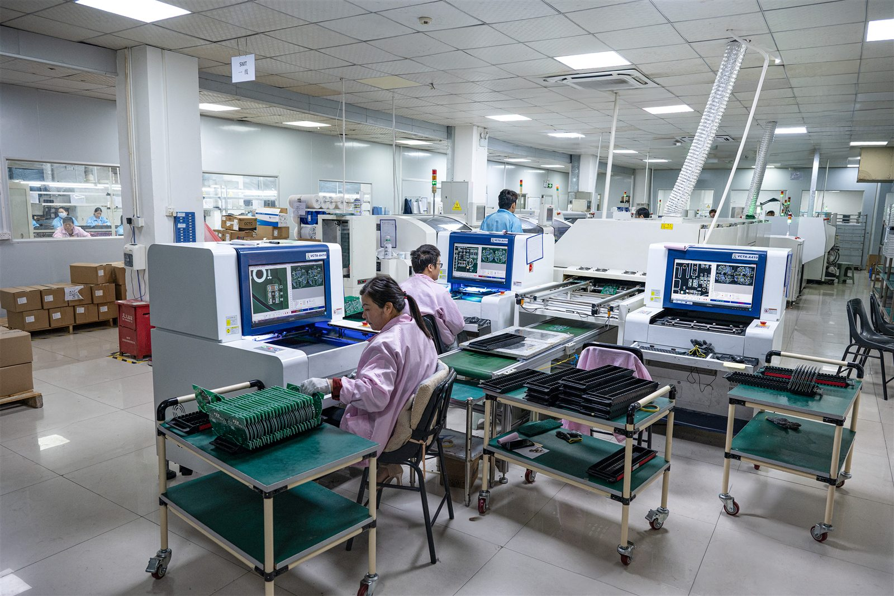
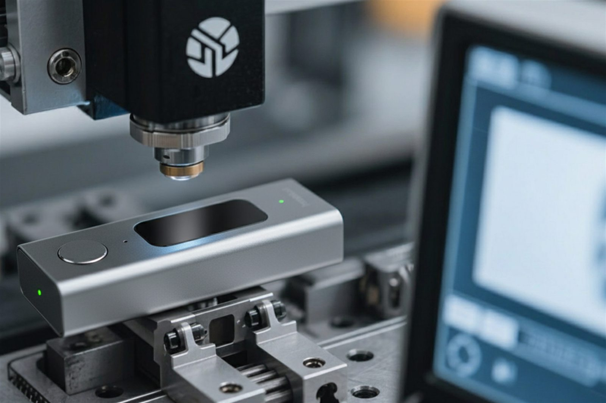

Dictation Devices for Doctors: How to Choose the Right Hardware
The right dictation device for a doctor depends on what needs to be captured, where the device is used, and how the audio enters the documentation workflow. A handheld recorder may work for post-visit dictation, while wearable or dedicated AI scribe hardware may be more appropriate for hands-free or doctor-patient conversation capture.
GMIC works with AI scribe and healthcare software companies that need dedicated voice-capture hardware designed around real clinical workflows — from microphone architecture through manufacturing.
US + Shenzhen Audio Engineering DSP Tuning Firmware SDK/API Manufacturing
Quick Choice Guide
Start from the workflow, not the device category. These are hardware and workflow considerations, not medical recommendations.
Post-visit dictation
A handheld recorder, a desktop microphone, or a smartphone. One speaker, speaking deliberately, at a distance the clinician controls.
Hands-free clinical notes
A wearable microphone, a badge recorder, or a dedicated voice device — anything that does not require unlocking a screen mid-encounter.
Doctor and patient conversation
A properly positioned dedicated device, tabletop hardware, or a multi-microphone architecture. Two speakers at different distances is a different problem.
Unreliable network
Local recording with an offline-first workflow and delayed sync, so a dead zone costs an upload rather than the encounter.
Building an AI scribe product
Dedicated hardware with firmware control, SDK/API integration, device management, and an OEM or ODM path to production.
What Are Dictation Devices for Doctors?
The category covers everything from a handheld recorder a physician speaks into after a visit, through desktop and USB microphones, wearable and badge devices, up to dedicated hardware built for an AI scribe platform. What separates them is less the microphone than what the device is expected to hear.
Some capture doctor-only dictation: one voice, close, deliberate. Others capture the doctor-patient conversation itself, so that AI software can turn it into documentation. The full device landscape, including integration architecture, is covered in the guide to medical dictation devices.
Doctor Dictation vs Ambient AI Scribe Capture
Traditional doctor dictation
Doctor speaks → recording → transcription → documentation
One speaker, deliberate speech, a predictable distance to the microphone, and a clinician who knows they are being recorded and speaks accordingly. The audio problem is largely solved by holding the device in a sensible place.
Ambient conversation capture
Doctor and patient talk → voice capture → audio processing → speech-to-text → AI scribe → clinical documentation
Multiple speakers at different distances, facing different directions, over room noise, with movement during the encounter. Nobody adjusts their speech for the microphone.
These are different recording problems, and the hardware architecture may differ accordingly. A device that is excellent for one can be mediocre at the other, which is why device selection should follow the workflow rather than the specification sheet.
Types of Dictation Devices
Every type here has workflows it suits. None of them is the best device in general.
| Device type | Best for | Advantages | Limitations | Hands-free | Offline | AI scribe integration |
|---|---|---|---|---|---|---|
| Handheld recorder | Post-visit dictation | Simple, dedicated controls | Manual handling | No | Yes | Limited |
| Desktop microphone | Telehealth, office work | Good, repeatable positioning | Stationary | No | Varies | Moderate |
| USB microphone | Desk workflows | Plug-and-play | Wired to a host | No | Via host | Moderate |
| Smartphone | Early pilots, simple workflows | Already available and familiar | Variable microphone, shared battery | No | App-dependent | App-dependent |
| Wearable microphone | Rounds, mobile clinicians | Hands-free, consistent distance | Patient capture varies | Yes | Platform-dependent | Strong |
| Badge recorder | Hospital shifts, all-day use | Built-in storage, worn | Multi-speaker capture is harder | Yes | Yes | Strong with SDK |
| Dedicated AI scribe device | Scaled, branded deployment | Purpose-built, SDK/API | Requires a hardware partner | Configurable | Configurable | Purpose-built |
| Tabletop or room device | Multi-speaker encounters | Captures the room | Less portable, needs DSP | Yes | Platform-dependent | With tuning |
Scroll the table horizontally to compare →

Choosing by Clinical Workflow
The same specification behaves differently in a dental operatory than in a quiet consultation room. What follows is what tends to drive the hardware decision in each setting.
Primary care and outpatient
Repeatable exam rooms and a clear choice between ambient capture and post-visit dictation. Mobility between rooms is usually the deciding factor.
Hospital rounds
Constant room changes and variable network coverage. Portable or wearable devices with reliable offline recording tend to fit best.
Dental practice
Hands-free is not a convenience here — gloves and procedures make it a requirement. Equipment noise and close positioning both matter.
Specialty clinics
Workflows vary too widely for a single recommendation. The architecture should follow observed clinician behavior rather than an assumed process.
Home healthcare
High mobility and unpredictable connectivity. Portability, simple controls, and offline capture usually outrank audio refinement.
Telehealth
Desk-based and predictable, but speaker playback introduces echo. Echo cancellation and USB or device integration become the questions.
Veterinary
An adjacent clinical workflow rather than a medical one: hands-free capture with animal and background noise, and often two people speaking.
Wider healthcare programs, including AI scribe and clinical voice capture, are covered under healthcare AI hardware.Book a call
Choosing Hardware for Doctor-Patient Conversation Capture
Five variables decide most of the outcome, and none of them is the microphone's datasheet.
Speaker distance
The doctor and the patient sit at different distances from the device, so one voice arrives louder than the other before any processing happens.
Microphone placement
Where the device sits relative to both speakers sets the capture balance. A worn device favors the wearer by design.
Room acoustics
Hard, cleanable surfaces reflect sound. Reverberation blurs the separation between speakers before the audio ever reaches software.
Background noise
HVAC, corridor traffic, and equipment compete with both voices, and the further voice loses first.
Overlapping speech
Real conversations overlap, and the two speakers are rarely at the same level. Both make downstream separation harder.
Capturing audio and identifying who spoke are separate problems. Hardware determines how cleanly each voice is recorded. Speaker diarization and identification are downstream software functions, and no microphone architecture performs them on its own. How the capture side is chosen is covered in choosing a microphone for an AI scribe.
Audio and DSP
Microphone position, speaker distance, ambient noise, and reverberation set the ceiling on what any processing can recover. Below that ceiling, a DSP chain — noise reduction, beamforming, automatic gain control, voice activity detection, and echo cancellation — conditions the signal that reaches the transcription stage.
What it cannot do is guarantee a transcription result. Final performance depends on the whole chain: capture, processing, the ASR model, the vocabulary, the speakers, and the environment. Tuning the hardware half of that chain is audio and DSP tuning.

Can Doctors Use Smartphones for Dictation?
Yes, and for a great many workflows it is a reasonable answer. The phone is already in the pocket, the clinician already knows how to use it, the app ecosystem is mature, and connectivity and updates are solved problems. For post-visit dictation in a quiet room, it is often all the hardware the workflow needs.
The limitations tend to appear with scale rather than in the first pilot: microphone variation across models, a battery shared with everything else the clinician does, placement that depends on how the phone is held, personal-device policies, and no meaningful firmware control. The full comparison is set out in medical dictation device vs smartphone.
When Dedicated Hardware Makes Sense
Worth evaluating when
- The workflow has to be hands-free
- Microphone position needs to be predictable
- Offline recording matters
- Dedicated physical controls are needed
- Firmware control, device identity, or a standardized fleet is required
- The device is part of a branded product, integrated with an AI platform
Smartphones remain better when
- The workflow is simple and the environment is quiet
- The deployment is small
- The software itself is still being validated
Not every doctor needs dedicated hardware, and a device bought before the requirement is clear usually solves nothing. When several of the conditions on the left do apply, the next question is what that device should be — the subject of the guide to dedicated AI scribe hardware.
How Dictation Hardware Connects to AI Software
The device captures and transports audio. Recognition, summarization, and note generation happen downstream, in software the customer owns.
-
Doctor / patient
One or more speakers, at whatever distance the encounter puts them.
-
Dictation device
Handheld, worn, desktop, or tabletop, depending on the workflow.
-
Microphone and DSP
Element, placement, and the processing chain tuned for the room.
-
Firmware
Recording logic, storage, authentication, and upload behavior.
-
Recording or stream
Held locally for later upload, or streamed during the encounter.
- Transport
- Wi-Fi
- BLE
- USB
- Companion app
-
SDK / API
The endpoint the device authenticates to and uploads through.
-
Customer cloud
The platform's own infrastructure or a private server.
-
Speech-to-text
Transcription of the captured audio, with or without speaker separation.
-
AI scribe
The customer's models turn the transcript into clinical content.
-
EHR / workflow
Delivered into the record system for the clinician to review and sign.
Connecting a device into an existing platform runs as AI SDK integration, and the device-side behavior it depends on is firmware integration.
Buyer Decision Framework
A starting point for each workflow, and what to put under test before committing to it.
| Workflow | Likely starting point | Why | What to test |
|---|---|---|---|
| Post-visit dictation | Handheld recorder or smartphone | Simple, one speaker | Audio clarity, upload reliability |
| Desktop physician workflow | Desktop or USB microphone | Stationary and predictable | Positioning, echo |
| Mobile clinical rounds | Wearable microphone or badge | Hands-free and mobile | Offline recording, battery |
| Hands-free clinical work | Wearable or dedicated device | No phone interaction possible | Placement, clothing noise |
| Doctor-patient ambient capture | Dedicated or tabletop device | Multi-speaker capture | Both voices, DSP behavior |
| Telehealth | Desktop microphone or existing setup | Stationary, known environment | Echo, speaker playback |
| Home healthcare | Portable device with offline capture | Unpredictable network | Sync, battery, simplicity |
| AI scribe pilot | Sample hardware on an existing platform | Validates fit before investment | The full workflow, end to end |
| Large deployment | Standardized dedicated device | Fleet consistency | Management, OTA, support load |
Scroll the table horizontally to compare →
Privacy and Security
A device on its own does not make a system compliant
Compliance is a property of the whole system: how audio is stored on the device and for how long, how it is transmitted and to whom, who can access it, what happens after upload, how a lost device is handled, and what the parties have agreed in writing. The HIPAA Security Rule sets out the safeguards involved; it is cited here to support the principle, not as a claim about any device.
Recording a clinical encounter also raises consent questions that vary by jurisdiction and by who is in the room. Those requirements should be confirmed with qualified legal counsel for each market a device will be deployed in, before the workflow is designed around them.
How GMIC Fits
GMIC builds the hardware layer for AI and healthcare software companies: microphone architecture, audio and DSP, firmware, SDK/API integration, prototyping, OEM and ODM development, manufacturing, QC, and certification support.
The sequence is deliberately incremental — clinical workflow, then audio requirements, then a hardware platform, then samples in the real environment, then integration, then a pilot, and only then a production decision. Most programs should start by evaluating existing voice hardware platforms rather than funding a custom product on day one. Worn form factors draw on AI wearable devices work, and the build itself runs as AI hardware ODM/OEM.
Useful if you are
- Evaluating clinical dictation hardware for a healthcare workflow
Especially relevant if you are
- An AI scribe or healthcare software company that needs dedicated hardware, customization, integration, or manufacturing
Related Guides
Medical Dictation Devices
The pillar guide to dictation hardware for AI scribe platforms.
Read the guideMedical Transcription Equipment
The full equipment landscape, from recorders to room systems.
Compare equipmentMicrophone for AI Scribe
Speaker distance, single versus array, DSP, and placement.
Read the guideDictation Device vs Smartphone
When a phone is enough, and when a device earns its cost.
See the comparisonDedicated AI Scribe Hardware
When purpose-built capture hardware becomes worth the investment.
Frequently Asked Questions
Handheld recorders, desktop microphones, smartphones, wearable microphones, badge recorders, and dedicated AI scribe devices. The choice depends on the workflow.
There is no universal best. Post-visit dictation may need a simple recorder; ambient conversation capture may need wearable or dedicated hardware; large deployments may need standardized fleet devices.
Yes. Smartphones work well for many workflows, especially early-stage pilots and simple environments. Limitations emerge at scale.
Yes, particularly for structured post-visit dictation by solo practitioners, radiologists, and pathologists.
With dictation, the clinician speaks structured notes for transcription. With an AI scribe, the device captures the ambient doctor-patient conversation and the software generates the documentation. Different recording problems, potentially different hardware.
A wearable captures the wearer's voice well at close range. Capturing the patient at a greater distance is a separate design consideration involving microphone architecture, placement, and DSP.
Not necessarily. Some support offline recording with delayed upload. The right architecture depends on whether immediate transcription is needed and how reliable connectivity is.
Yes. Dedicated hardware can deliver audio over Wi-Fi, BLE, USB, or a companion app to the customer's cloud and AI platform through SDK/API integration.
No. Compliance depends on the complete system — hardware, firmware, transmission, cloud, software, authentication, policies, and the applicable agreements.
Building Dictation Hardware for a Clinical AI Workflow?
If your AI scribe, medical transcription, or healthcare software platform needs a dedicated physical voice-capture layer, GMIC can evaluate the recording environment, form factor, microphone architecture, firmware, connectivity, and software-integration requirements.